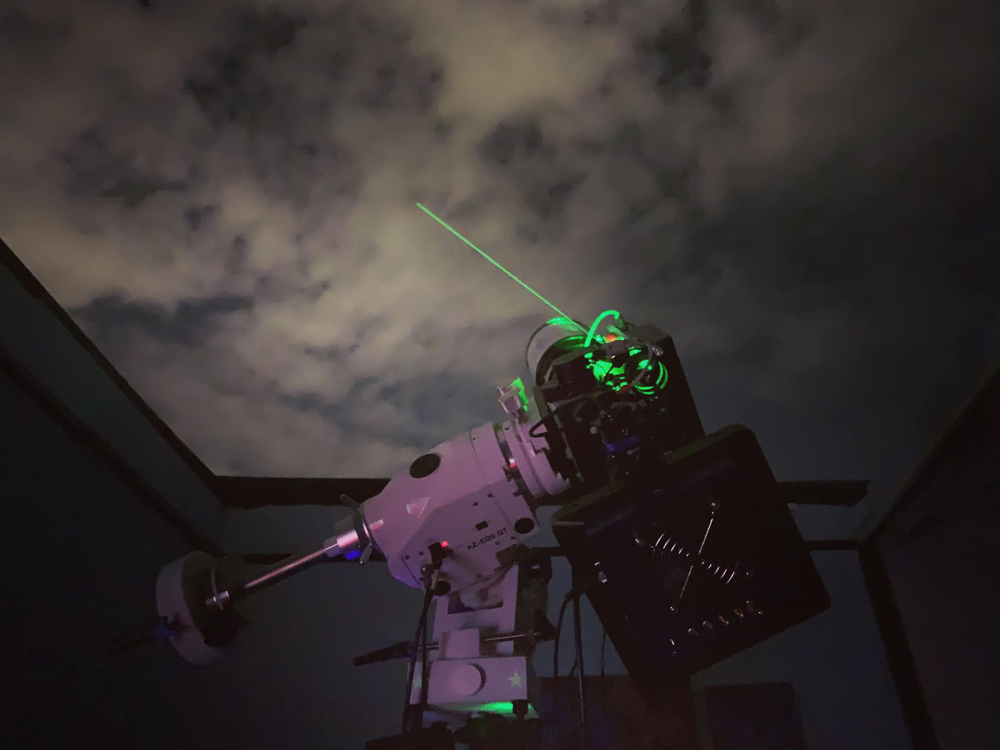

Giới thiệu
Tôi là Việt Anh. Đây là sản phẩm đầu tiên phục vụ học môn lập trình Website.
Với tốc độ phát triển của khoa học – kĩ thuật, việc ghi hình những tinh vân hay các thiên hà xa xôi không còn quá xa lạ với giới nghiệp dư ở Mỹ và các nuớc châu Âu. Tuy nhiên lĩnh vực này vẫn còn khá mới mẻ đối với đại đa số người Việt Nam. Truớc tôi, đã có một số ít anh em cũng đã đầu tư chơi ảnh thiên nhưng gần như cộng đồng còn rất nhỏ và chưa có tính liên kết cao, chưa tạo thành một “trào lưu” thật sự. Hai khó khăn chính cản trở người đam mê thiên văn tiếp cận thú chơi này vẫn là mức đầu tư cho thiết bị còn cao và cách vận hành phức tạp. Điều kiện khí hậu không thuận lợi ở nuớc ta và ô nhiễm ánh sáng tại các thành phố lớn cũng ảnh hưởng rất nhiều tới kết quả thu được. Do đó, có thể coi đây là thú chơi tốn kém – tốn tiền bạc, tốn thời gian, tốn công sức và trí tuệ.
Toàn bộ nội dung trong trang web này đều có từ Blog của anh Trần Hạ, một nhiếp ảnh gia thiên văn nổi tiếng của Việt Nam: Trần Hạ Blog
Nội dung và dữ liệu đã được sự đồng ý sử dụng của tác giả